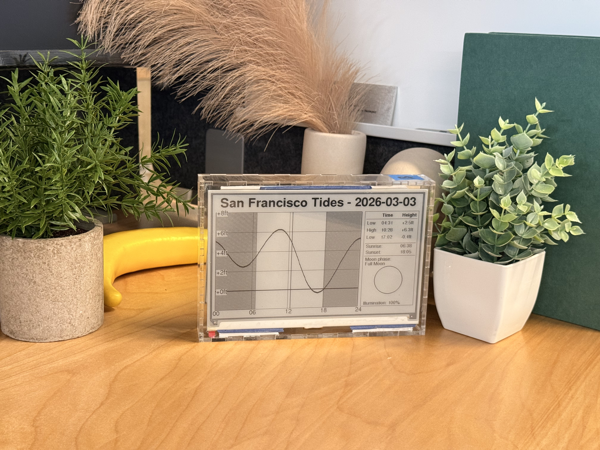
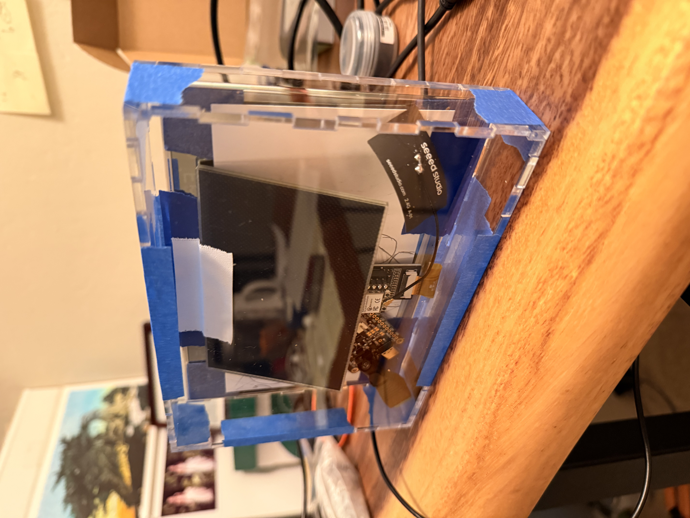

A Solar-Powered E-ink Tide Chart
Note: this is a preliminary write up. The device is still headed for the field, and this page will be updated with installation photos and lessons learned once it is deployed at the beach.

This is a small, self-contained device that shows the day's tides on an e-ink screen. It is meant to be installed at a public beach: no cord, no cloud, no app. It wakes once a day, draws the tide curve, the high and low water times, sunrise and sunset, and the phase of the moon, and then goes back to sleep. A person walking by should be able to read it at a glance the way you would read a clock.
The design goal was quiet self-sufficiency. A public installation cannot assume WiFi, cannot assume anyone will maintain it, and should not need to be plugged in. So the whole thing runs off a small solar panel trickle-charging a battery, and the software is deliberately simple — there is no event loop and no UI framework in the path that actually runs on the beach. Once a day is enough for a tide chart.

The hardware is intentionally modest: a Seeed Studio XIAO ESP32-C3 microcontroller, chosen for its very low deep-sleep current, driving a 7.5 inch monochrome e-paper panel (800 by 480 pixels). Power comes from a 1200 mAh lithium battery topped up by a small solar panel. The radios — WiFi and Bluetooth — are switched off entirely to save energy, which has an interesting consequence: the device has no way to ask the internet what time it is. Instead the clock is seeded when the firmware is compiled and then kept alive across sleep cycles in the microcontroller's real-time-clock memory.
Because there is no network, everything the display shows has to be computed on the device from first principles. The tides are predicted by harmonic analysis: the water level is modeled as a sum of cosine terms, one for each tidal constituent (the moon's principal semi-diurnal term M2, the sun's S2, the diurnal K1 and O1, and so on), each with its own amplitude, phase, and angular speed. Those constituents are published by NOAA for each tide station — this build is tuned to San Francisco (station 9414290). The sunrise and sunset times come from the standard NOAA sunrise equation evaluated at the installation's latitude and longitude, and the moon phase from a simple mean-synodic model that counts days since a known new moon.
Everything location-specific — the tide station's harmonic constants, the coordinates, the timezone, and the on-screen text — is kept in one place so the same device can be re-pointed at a different beach by editing a handful of values. The firmware also has two build profiles: a debug mode that stays awake and redraws every hour while I am working on it, and a deploy mode that sleeps all day and wakes once, at two in the morning, to redraw and go back to sleep.
The source code is available on GitHub.